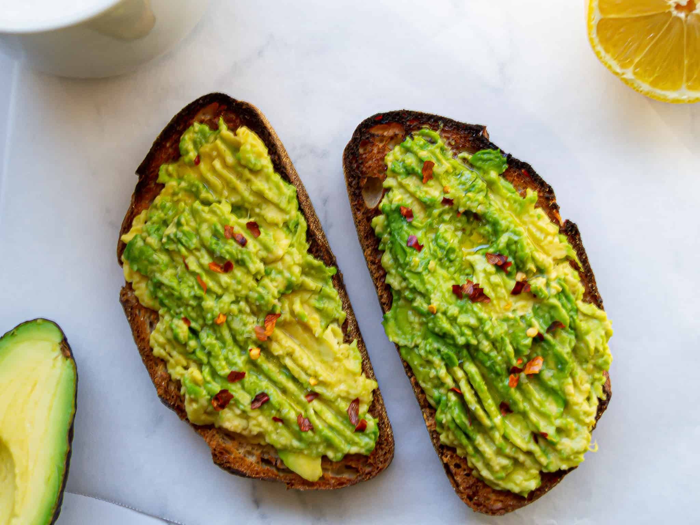

Avocado on Toast
The ultimate avocado on toast. A simple, flavourful recipe that you will reach for again and again.
Ingredients
- A good loaf of bread - either a large farmhouse or sourdough
- Olive oil
- 1 large avocado, ripe and ready to eat
- Lemon juice
- Garlic powder
- Chilli flakes
- Salt and pepper
Instructions
- Coat a frying pan with 1/2 tbsp olive oil
- Cut 2 thick slices of bread
- Fry the bread over a medium heat, flipping after a few minutes
- Mash the avocado in a bowl with a fork
- Into the avocado, mix 1/2 tsp garlic powder, a squeeze of lemon juice and salt and pepper to taste
- Once the bread is toasted both sides, spread with the avocado mixture and top with a sprinkle of chilli flakes and a drizzle of olive oil
- Serve immediately